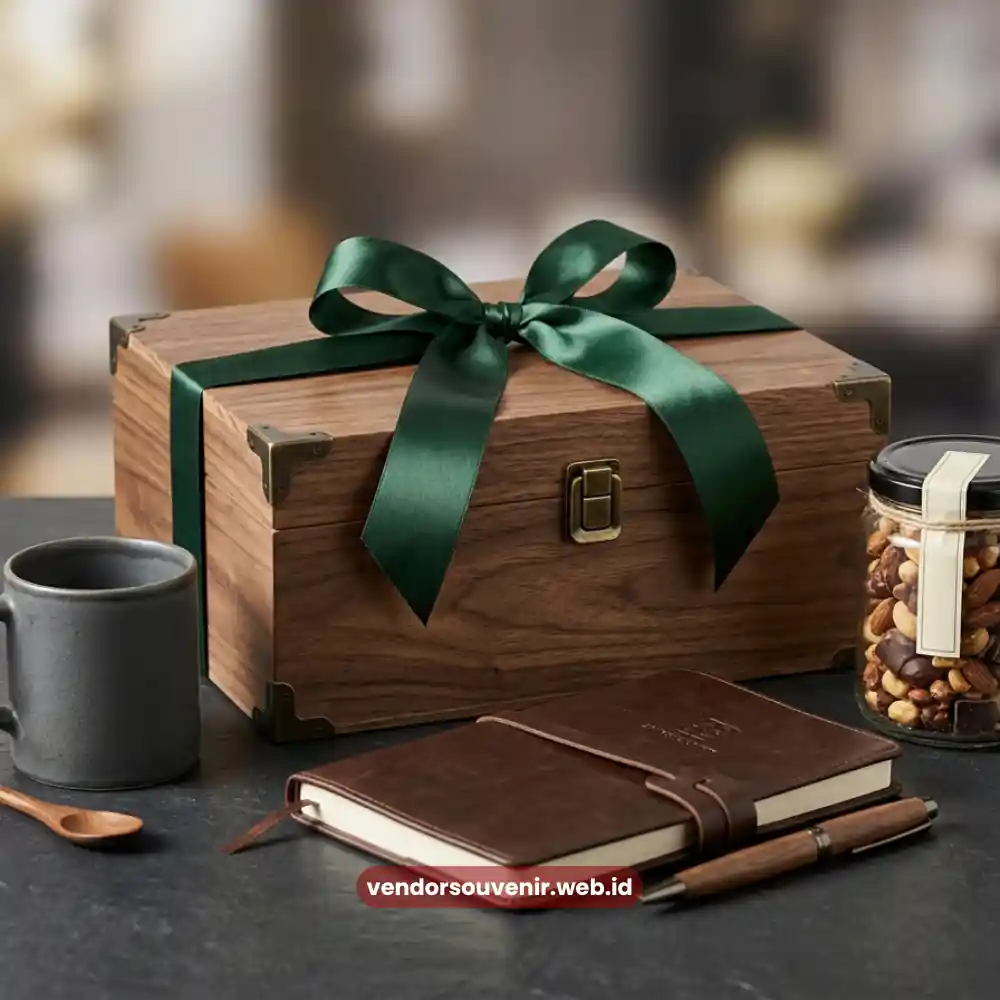

Daftar Isi
Hampers ucapan terima kasih untuk klien adalah paket apresiasi berisi kombinasi produk premium.
Seperti makanan, minuman, dan merchandise korporat yang dikirimkan perusahaan kepada klien.
Sebagai simbol penghargaan atas kepercayaan dan kerja sama yang telah terjalin.
Hampers ini umumnya dikemas secara eksklusif dengan sentuhan personal.
Mulai dari kartu ucapan hingga logo perusahaan, sehingga terasa jauh lebih bermakna dibandingkan hadiah biasa.
Pemilihan hampers yang tepat dapat memperkuat hubungan bisnis jangka panjang dan meningkatkan loyalitas klien.
- Hampers klien berfungsi sebagai simbol apresiasi sekaligus strategi menjaga hubungan bisnis.
- Waktu pengiriman yang tepat sangat memengaruhi kesan yang diterima oleh klien.
- Kualitas isi dan kemasan hampers mencerminkan citra profesional perusahaan Anda.
- Personalisasi menjadi kunci utama agar hampers terasa istimewa, bukan sekadar hadiah generik.
Mengapa Hampers Ucapan Terima Kasih Penting bagi Hubungan Bisnis?
Hampers ucapan terima kasih penting karena menjadi bahasa non-verbal.
Yang menunjukkan bahwa perusahaan benar-benar menghargai kepercayaan yang diberikan klien.
Dalam dunia bisnis yang kompetitif, hubungan yang hanya dijaga lewat transaksi cenderung rapuh.
Dan mudah tergantikan oleh penawaran kompetitor lain.
Sebaliknya, apresiasi yang disampaikan secara tulus melalui hampers mampu menumbuhkan rasa dihargai.
Yang pada akhirnya berdampak pada loyalitas dan keberlanjutan kerja sama.
Selain memperkuat loyalitas, hampers juga menjadi sarana efektif membangun citra perusahaan yang perhatian.
Klien yang menerima hampers berkualitas cenderung mengingat pengalaman positif tersebut.
Dan menceritakannya, sehingga turut memperluas jaringan reputasi perusahaan Anda.
Kapan Waktu yang Tepat Mengirim Hampers kepada Klien?
Waktu pengiriman hampers sangat menentukan bagaimana pesan apresiasi tersebut diterima.
Momen yang umum dipilih perusahaan antara lain menjelang akhir tahun sebagai bentuk refleksi kerja sama.
Atau saat penandatanganan dan perpanjangan kontrak besar.
Setelah penyelesaian proyek penting, maupun pada perayaan hari besar keagamaan juga sangat disarankan.
Pemilihan momen yang tepat membuat hampers terasa relevan dan tidak sekadar formalitas.
Pembahasan mendalam tentang berbagai momen strategis dapat Anda temukan pada artikel momen terbaik mengirim hampers klien.
Apa Saja Kriteria Hampers Klien yang Berkesan?
Hampers yang berkesan umumnya memenuhi beberapa kriteria utama.
Yaitu kualitas produk yang premium dan tahan lama, serta kemasan yang rapi dan elegan.
Tingkat personalisasi yang tinggi dan kesesuaian isi hampers juga sangat penting diperhatikan.
Hampers yang hanya mengandalkan kuantitas tanpa kualitas berisiko menurunkan persepsi klien terhadap perusahaan.
Konsistensi dengan identitas merek perusahaan pengirim juga menjadi nilai tambah tersendiri.
Sentuhan logo dan kartu ucapan yang dipersonalisasi membuat hampers berfungsi sebagai media branding yang halus.
Pilihan Isi Hampers Ucapan Terima Kasih yang Elegan
Rangkaian Produk Premium dengan Sentuhan Personal
Isi hampers untuk klien korporat idealnya terdiri atas kombinasi produk yang mencerminkan kualitas.
Misalnya makanan gourmet, minuman pilihan, hingga perlengkapan kerja premium.
Seperti alat tulis eksklusif atau tea set berlogo perusahaan.
Kombinasi ini memberi kesan bahwa hampers disiapkan dengan pertimbangan yang matang.

Kemasan Hampers yang Elegan dan Rapi
Kemasan sebagai Cerminan Profesionalisme Perusahaan
Kemasan hampers berperan besar dalam membentuk kesan pertama sebelum klien membuka isinya.
Kemasan yang rapi, kokoh, dan estetik menandakan bahwa perusahaan memperhatikan detail.
Sebaliknya, kemasan yang terkesan seadanya dapat mengurangi nilai dari isi hampers itu sendiri.
Sekalipun produk di dalamnya memiliki kualitas yang sangat tinggi.
Bagaimana Cara Memilih Hampers yang Sesuai dengan Profil Klien?
Pemilihan hampers idealnya disesuaikan dengan profil dan skala hubungan bisnis dengan klien.
Klien korporat besar biasanya mengapresiasi hampers dengan kesan formal dan elegan.
Sementara klien dengan hubungan yang lebih personal dapat diberikan hampers dengan sentuhan hangat.
Namun tetap mengedepankan kesan profesional dalam setiap penyajiannya.
Faktor anggaran dan nilai strategis klien juga perlu dipertimbangkan agar pemberian proporsional.
Apa Saja Kesalahan Umum dalam Memberikan Hampers kepada Klien?
Beberapa kesalahan yang sering terjadi antara lain memilih hampers yang terlalu generik tanpa sentuhan personal.
Mengejar kuantitas dengan mengorbankan kualitas produk juga merupakan kesalahan fatal.
Selain itu, mengirim hampers pada waktu yang kurang tepat dapat mengurangi dampaknya.
Serta mengabaikan aspek etika dan kebijakan internal terkait pemberian hadiah kepada klien.
Kesalahan-kesalahan ini dapat mengurangi dampak positif yang seharusnya diperoleh dari pemberian hampers.
Aspek etika pemberian hadiah biasanya dibahas khusus pada kebijakan korporat.
Mengapa Memilih Hampers Malang untuk Apresiasi Klien Anda?
Hampers Malang memahami bahwa setiap hampers yang dikirimkan kepada klien membawa nama baik perusahaan Anda.
Karena itu, setiap rangkaian produk disusun dengan memperhatikan kualitas dan estetika kemasan.
Serta kemungkinan kustomisasi logo perusahaan agar hampers benar-benar mencerminkan identitas bisnis Anda.
Layanan pemesanan yang fleksibel juga memudahkan tim korporat dalam mengatur pengiriman hampers.
Baik untuk klien dalam jumlah besar maupun pesanan yang lebih personal.
Jika perusahaan Anda ingin memberikan kesan mendalam, Hampers Malang siap membantu menyusun paket yang sesuai.

Solusi Gift Set dari Vendor Terpercaya
Kesimpulan
Memberikan hampers ucapan terima kasih kepada klien bukan sekadar formalitas biasa.
Melainkan investasi jangka panjang dalam menjaga hubungan bisnis yang sehat dan saling menguntungkan.
Ketepatan waktu, kualitas isi, kemasan yang elegan, dan sentuhan personal adalah kunci utama.
Agar apresiasi tersebut benar-benar berkesan di mata klien bisnis Anda.
Percayakan penyusunan hampers ucapan terima kasih untuk klien Anda kepada Hampers Malang.
Dan wujudkan apresiasi yang mencerminkan profesionalisme bisnis Anda secara menyeluruh.
Ingin Memesan Hampers untuk Relasi Bisnis?
Kami siap membantu pengadaan corporate gift Anda dengan layanan terbaik.
Konsultasikan desain logo dan pilihan box eksklusif Anda kepada tim kami.
Mari ciptakan impresi elegan untuk mitra bisnis Anda.
Dapatkan penawaran harga terbaik untuk pesanan korporat!
FAQ
Apa itu hampers ucapan terima kasih untuk klien?
Hampers ucapan terima kasih untuk klien adalah paket apresiasi berisi produk pilihan seperti makanan, minuman, atau merchandise korporat yang diberikan kepada klien sebagai bentuk penghargaan atas kerja sama yang telah terjalin.
Berapa kisaran anggaran ideal untuk hampers klien korporat?
Anggaran hampers klien umumnya disesuaikan dengan skala hubungan bisnis, nilai strategis klien, dan kebijakan internal perusahaan, sehingga besarannya dapat bervariasi tergantung kebutuhan masing-masing perusahaan.
Apakah hampers bisa dikustomisasi dengan logo perusahaan?
Ya, sebagian besar penyedia hampers korporat termasuk Hampers Malang menawarkan opsi kustomisasi logo pada kemasan atau produk tertentu agar hampers mencerminkan identitas perusahaan pengirim.
Kapan waktu terbaik mengirim hampers ke klien?
Waktu yang umum dipilih antara lain menjelang akhir tahun, saat perpanjangan kontrak, setelah penyelesaian proyek penting, atau pada momen hari raya dan perayaan perusahaan.
Bagaimana cara memesan hampers ucapan terima kasih untuk klien di Hampers Malang?
Perusahaan dapat menghubungi tim Hampers Malang untuk berkonsultasi mengenai kebutuhan, anggaran, serta jumlah hampers yang diinginkan sebelum proses penyusunan dan pengiriman dilakukan.
Maroon Souvenir
Partner Corporate Gift terpercaya di Indonesia. Berpengalaman melayani ratusan perusahaan sejak 2018.
Lihat Portofolio Kami